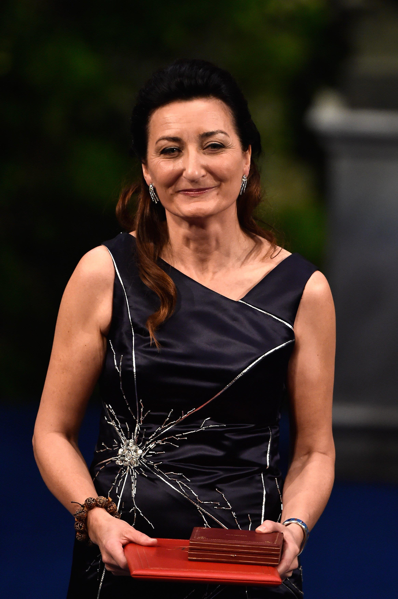

Quem foi May-Britt Moser
May-Britt moser nascida em 4 de Janeiro de 1963 em Fosnavåg na Noruega. Foi casada com o psicologo Edvard Moser com quem tev duas filhas Ailin Moser e Isabel Moser. Formada em Neurociência pela univercidade de Oslo - Noruega.

Como ficou conhecida?
Ficou conhecida com o prêmio Nobel, pelo seu trabalho de pesquisa onde teve uma descoberta de células que formam um sistema de posicionamento no cérebro humano, uma espécie de "GPS" interno. Sendo assim a única mulher a receber o prêmio Nobel de ciência em 2014.
Prêmios que conquistou
Prêmio Nobel de Fisiologia (2014) Prêmio Louisa Gross Horwitz(2013)